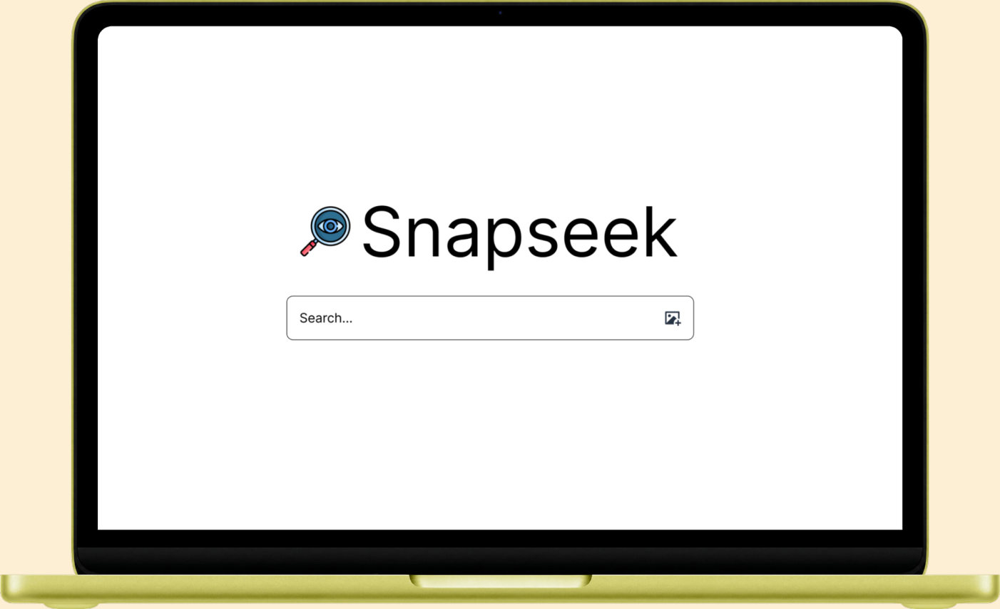
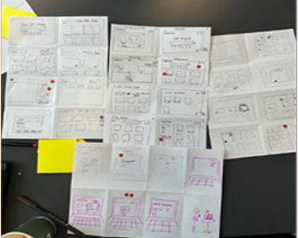
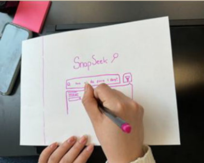
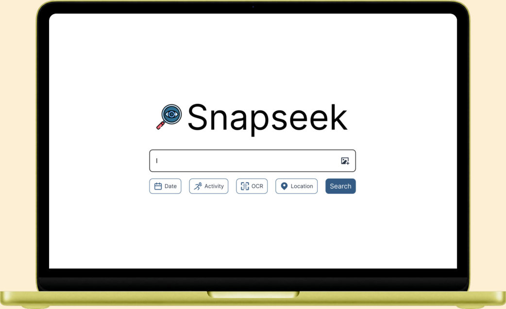
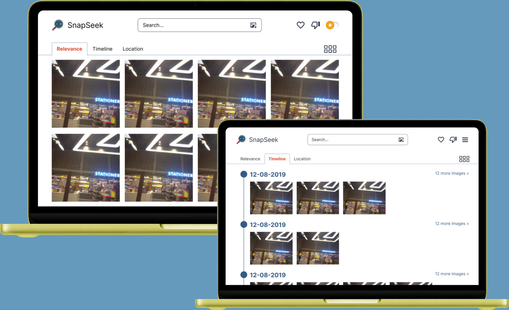
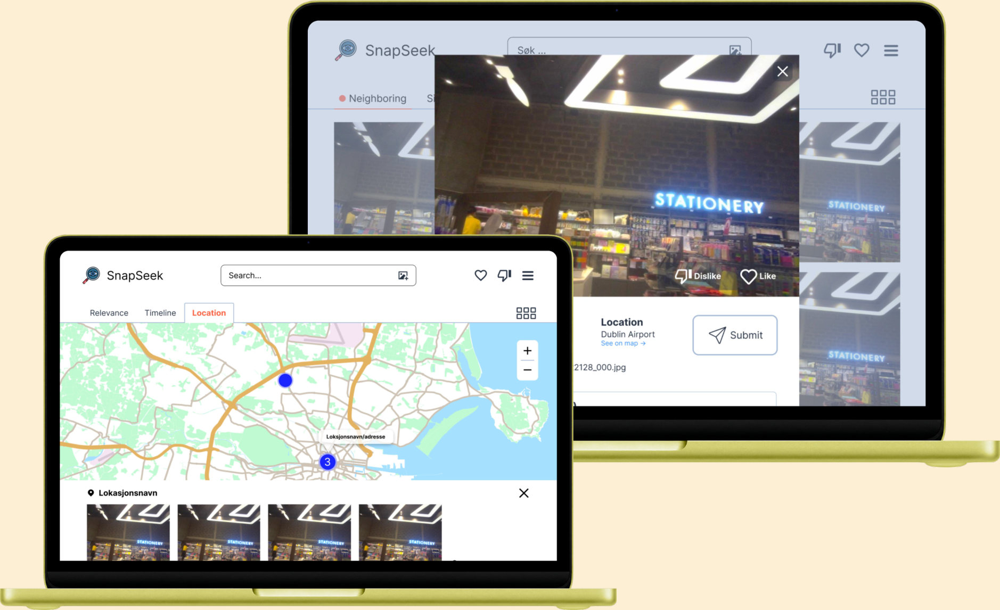

SnapSeek 2.0 er laget for eksperter som konkurrerer i Lifelog Search Challenge, der det
handler om å finne riktig bilde raskest mulig. Vi brukertestet systemet på nybegynnere, med
oppgaver fra konkurransen, eyetracking og ekspertintervjuer. Det viste seg at mange
funksjoner var vanskelige å oppdage. Brukerne søkte med enkle ord, scrollet manuelt og
prøvde seg frem i stedet for å bruke filtrene. De opplevde systemet som komplisert og
vanskelig å forstå.
Vi tok funnene videre i en designsprint med idémyldring og skisser. Målet var ikke å legge til
nye funksjoner, men å gjøre de eksisterende lettere å finne og bruke. Redesignet ble testet
med brukere og sammenlignet med den opprinnelige versjonen.





Prosjektet ble laget i emnet MIX204 – Design for mediebruk ved Universitetet i Bergen våren 2026,
sammen med tre andre studenter.
Verktøy: Figma